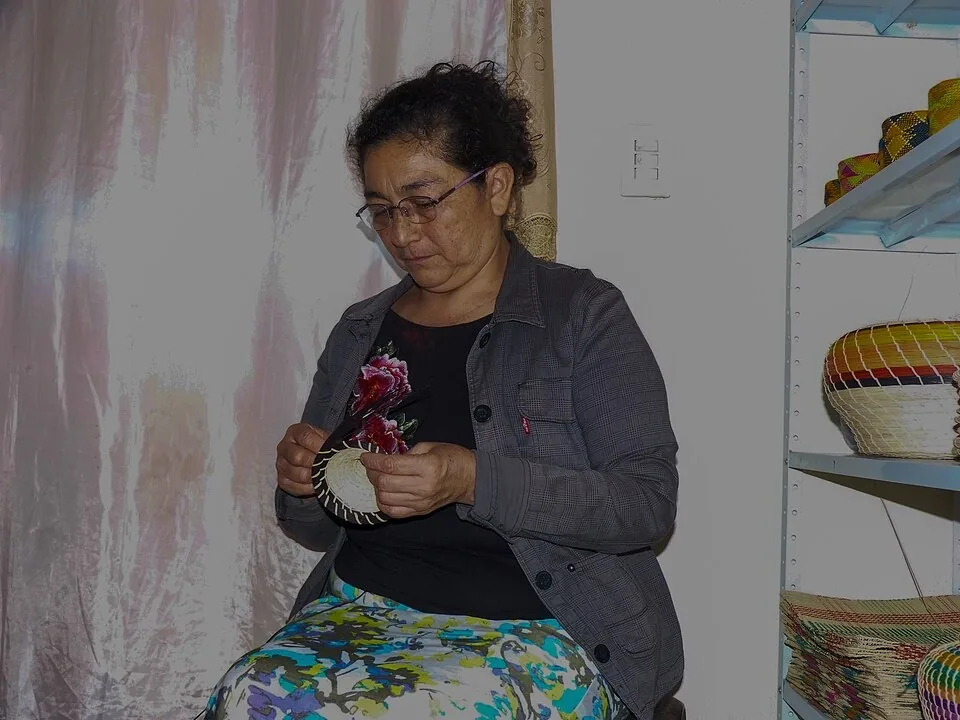
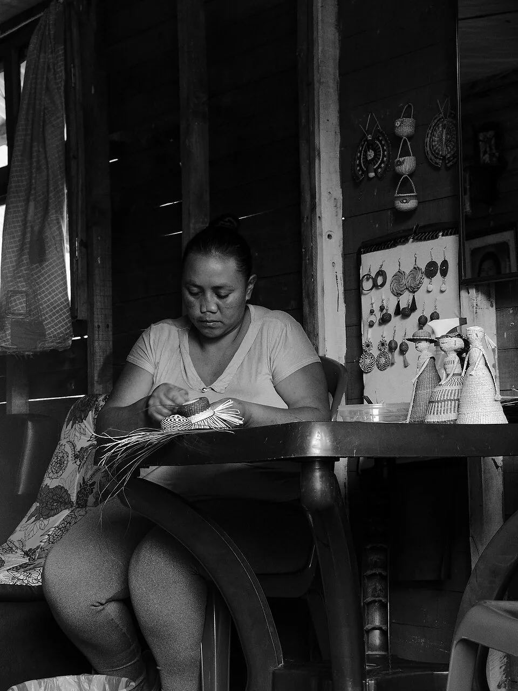

En Sandoná, Nariño, el trabajo con iraca produce sombreros, canastos y otros objetos. La documentación de Artesanías de Colombia vincula esa producción con un territorio más amplio: Linares figura entre los municipios que suministran la fibra. El lugar del tejido y el lugar de la materia prima no son necesariamente el mismo. Seguir esa relación ofrece una entrada más precisa a la cestería que su apariencia natural. [1]
Una fibra demasiado tensa puede deformar el borde; una demasiado suelta puede abrir la trama. La forma se decide mientras se dobla, se cruza y se ajusta el material. El dibujo previo orienta el trabajo, pero no sustituye esa comprobación. Mirar la cestería desde el diseño exige seguir las operaciones que permiten sostener el volumen, además de reconocer su silueta final.
Miguel Mesa Posada examina en ReVista, en 2024, la relación entre saberes colombianos y mercados de lujo desde su experiencia de desarrollo de productos. Describe accesorios de iraca y combinaciones con otros materiales. Su lectura defiende nuevas posibilidades comerciales para los oficios; aquí interesa contrastar esa oportunidad con una pregunta: quién participa en las decisiones y en el valor generado. [2]


Hay una diferencia fundamental entre diseñar para una comunidad y diseñar con quienes conocen el oficio. En el primer caso, la técnica puede convertirse en un recurso disponible para resolver una idea concebida en otro lugar. En el segundo, el conocimiento artesanal participa desde el comienzo en la definición del problema, la experimentación y las decisiones formales. No se trata de impedir que las técnicas cambien, sino de preguntarse quién tiene derecho a dirigir ese cambio y quién recibe sus beneficios.
Cambiar el uso del tejido permite ensayar otras relaciones entre trama y volumen. Una superficie más abierta deja pasar luz y aire; una más cerrada modifica la continuidad del límite. Llevar esa posibilidad a un objeto distinto obliga a revisar densidades, tensiones y apoyos. La apariencia de una trama puede sugerir una aplicación, pero el material necesita probarse bajo las exigencias del nuevo uso.
El origen vegetal no basta para evaluar el comportamiento ambiental de una pieza. Importan la obtención de la fibra, los tratamientos, el transporte, la duración y la reparación. También hacen falta datos sobre las condiciones de producción. Atribuir sostenibilidad a la textura natural evita precisamente el trabajo de seguir el material y conocer qué ocurre con él antes y después del tejido.
Una tradición puede incorporar herramientas y materiales nuevos. El cambio merece examinarse por lo que permite y por lo que exige: cómo responde la fibra, qué proceso se modifica y qué conocimiento sigue siendo necesario. Mantener una apariencia intacta no asegura la continuidad de la técnica. Una variación formal puede, en cambio, abrir trabajo para quienes la conocen.


La continuidad del oficio necesita también formas de organización. Héctor Alonso Molina Huertas publica en Hallazgos, en 2025, una investigación basada en entrevistas con cesteros de Filandia y entidades de apoyo. Identifica dificultades de cohesión y comunicación en el modelo asociativo estudiado y propone una gestión cooperativa. Es un diagnóstico de ese caso; no una descripción de toda la cestería colombiana. [3]
La continuidad del oficio necesita acuerdos de trabajo además de nuevos productos. Una colaboración puede precisar quién decide la forma, cómo se presupuestan los ensayos, qué créditos se conservan y quién puede proponer cambios. Esas condiciones determinan si la experiencia de quien teje participa en el proyecto o queda limitada a ejecutar una solución ya definida.
La estructura del tejido hace visibles algunas de esas decisiones. Cambiar la separación entre fibras altera la superficie, el paso de la luz y el comportamiento del conjunto. Para llevar esa lógica a una lámpara o un cerramiento habría que comprobar otras exigencias de uso y seguridad. El parentesco formal con un canasto puede iniciar una investigación; no acredita por sí solo el funcionamiento del nuevo objeto.
En un canasto, la tensión de una fibra afecta a las demás y el borde debe dar continuidad al conjunto. Una nueva aplicación necesita comprender esas dependencias antes de ampliar la escala o cambiar el uso. La innovación puede empezar por ahí: permitir que el conocimiento del tejido modifique el proyecto, incluidos sus límites de fabricación.
Fuentes.
- Artesanías de Colombia — Sandoná, de la iraca al sombrero
- Miguel Mesa Posada — The Summer of Craft, ReVista, 18.11.2024
- Molina Huertas — cesteros de Filandia, Hallazgos 22(43), 2025
Ensayo con casos de Sandoná y Filandia. Sin visita de taller, ensayo material ni evaluación ambiental propia. No representa todas las tradiciones cesteras.
Fuentes consultadas el 13.11.2026. Interpretación y edición: RUMMOR. Edición de prueba para revisión.